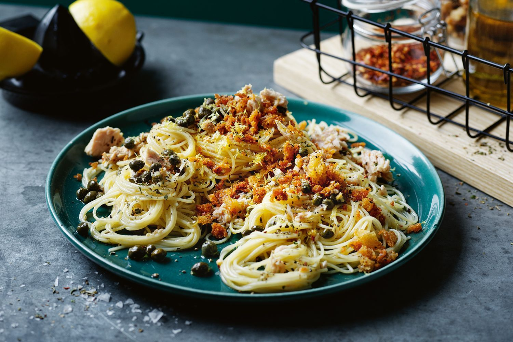

Recipes for health conscious, busy, & budget minded young adults.
Beyond Ramen is a social network for young adults seeking better food alternatives. The unfortunate choice of food for most college students is prepackaged ramen noodles! Join us in our pursuit for a healthier and tastier alternative. Take a look through our recipe book, or share your own favorite recipe.
Favorite Recipes
Favorite Recipes
Tuna Caper Pasta
This is incredible! I had all of the ingredients already, so it was super easy to make.
Review from Mike Scott
New Recipes
